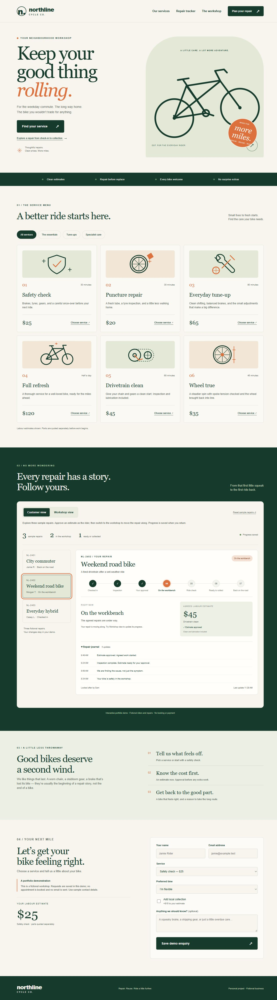
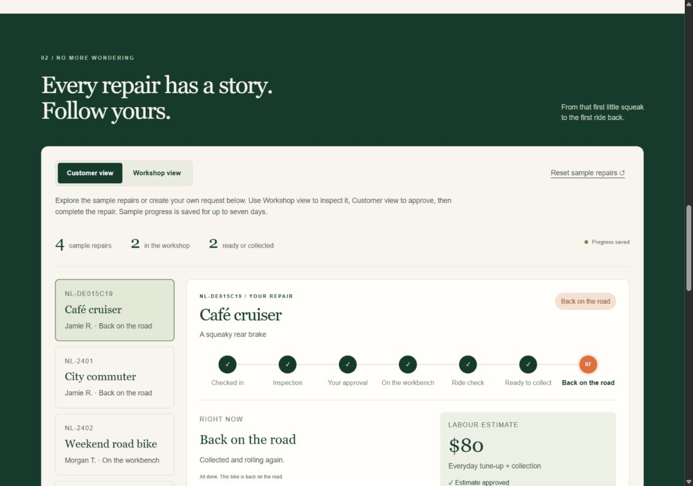
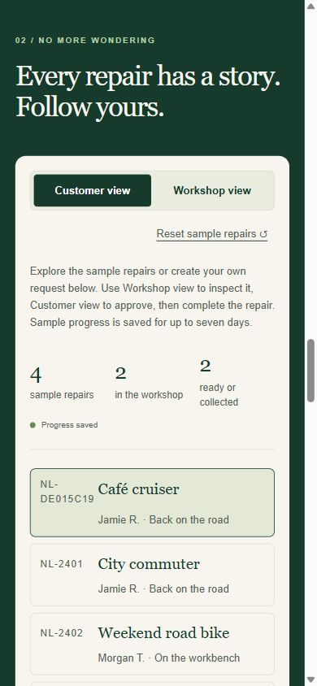

A request becomes
a tracked repair.
A bicycle workshop concept that carries a service enquiry through an estimate, approval, repair stages, and collection.
Self-directed project · Fictional workshop · Separate demo workspace for each visitor.


Request → estimate → approval → repair → collection.
Keep the request connected to its progress and history, so the customer can see what happens next.
32 regression checks and 12 hosted smoke checks, with screenshots and a reproducible QA record.
Inspect the checks ↗Inside the repair workflow
Progress has a history.
The customer can approve an estimate and track seven repair stages. The workshop view moves the repair forward and records its journal.
Visitor workspaces separate sample requests. Duplicate submissions, expired sessions, interrupted requests, and conflicting changes have explicit handling.
Read the project story ↗
